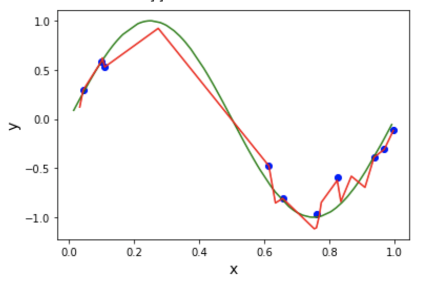
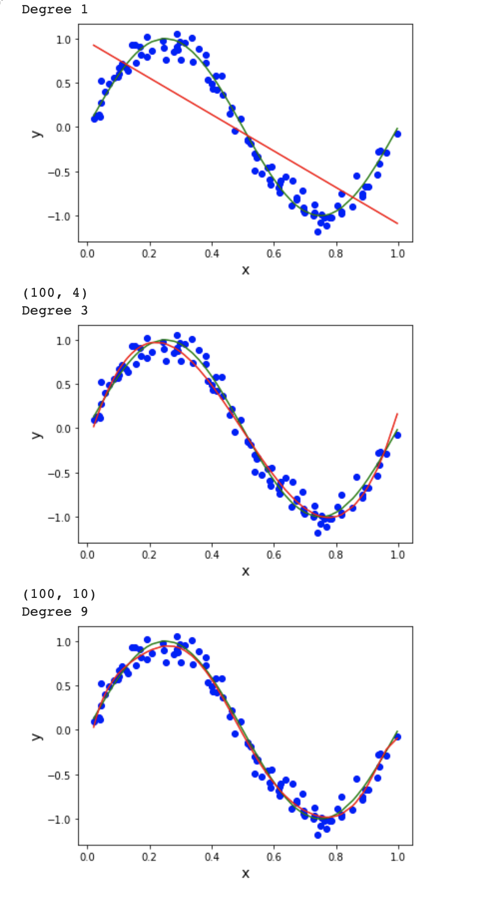

Overfitting vs Underfitting
Source Code
GitHub
MY CONTRIBUTION (EXPERIMENTS)

I tried increasing the degree even more with the original dataset and made it to 15 and noticed that the model got more worse.

As less data is one of the reasons for overfitting I tried increasing the dataset to 100 and degrees too. This showed some stability compared to the previous models with less data and higher orders.
Challenge
Being a newbie in this vast field of AI. A major challenge was grasping and implementing the ML algorithms and learning the math behind it. This experiment pushed me to explore various sources and learn more about the topics related to it theoretically as well as from the practical aspect of it.